Actualidad
¡Detallazo de la plantilla del Levante femenino!
Saber más...Aitana Bonmatí, distinguida con la Creu de Sant Jordi 2024
Saber más...Mariona se rebela
Saber más...Próxima Jornada
| Local | Visitante | |
|---|---|---|
| 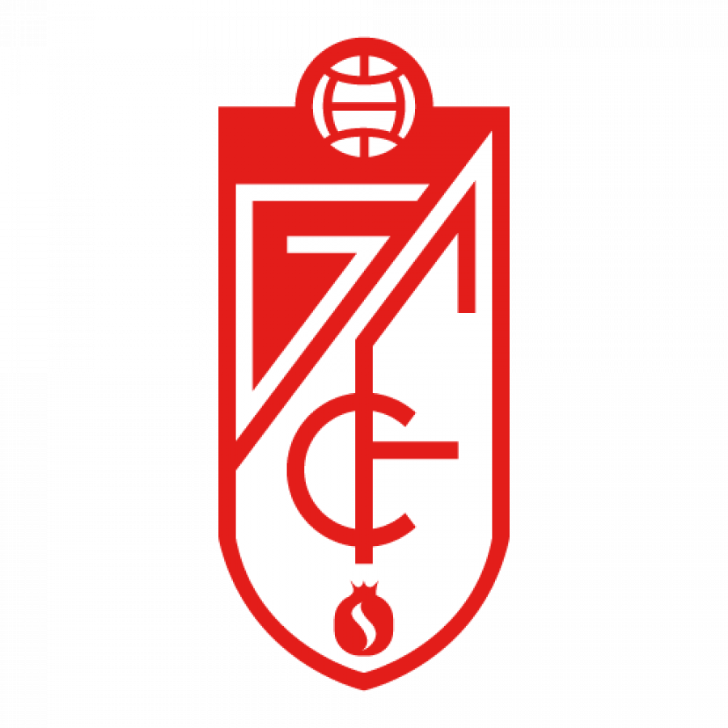Granada | 14/12 12:00 | Madrid CF 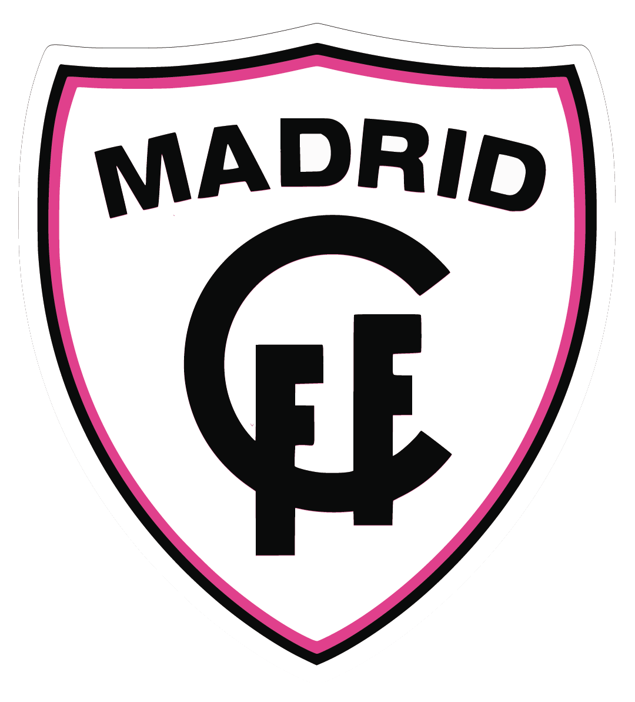 |
| 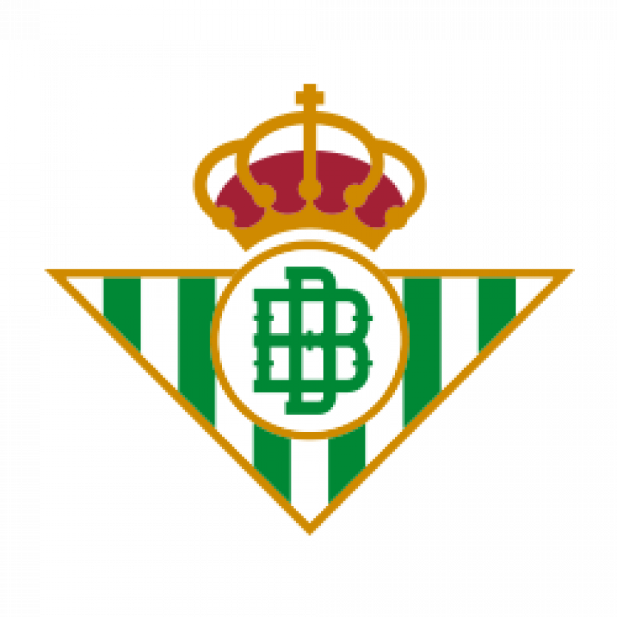Betis | 14/12 14:00 | Atlético de Madrid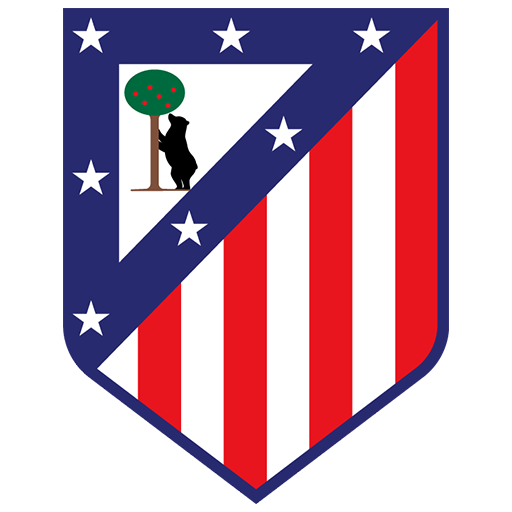 |
| 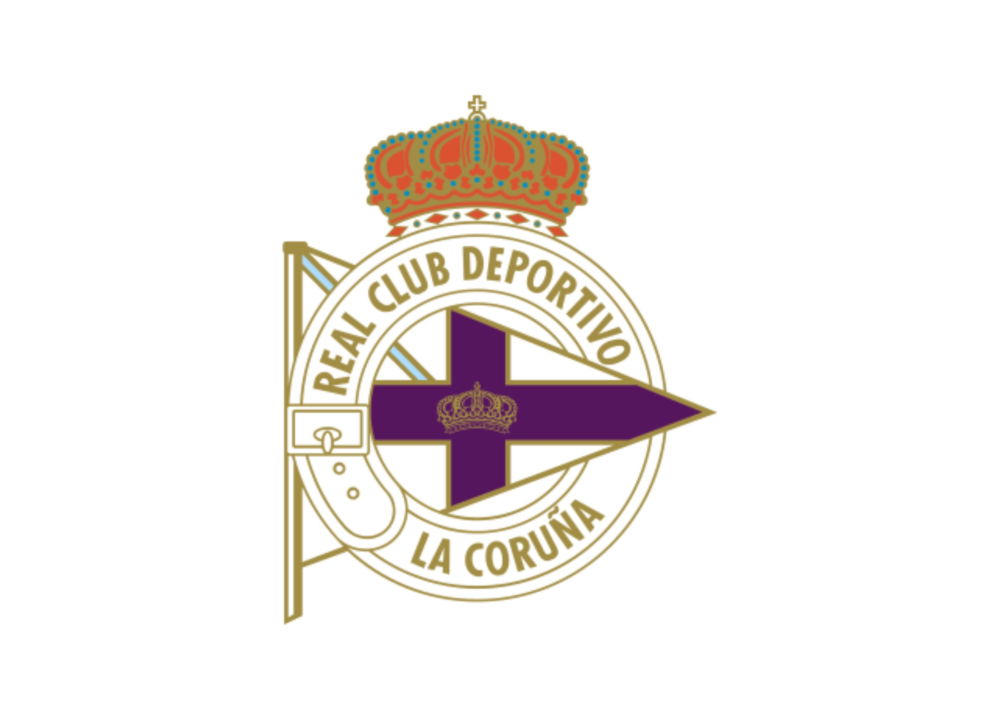Deportivo | 14/12 16:30 | Real Madrid |
| 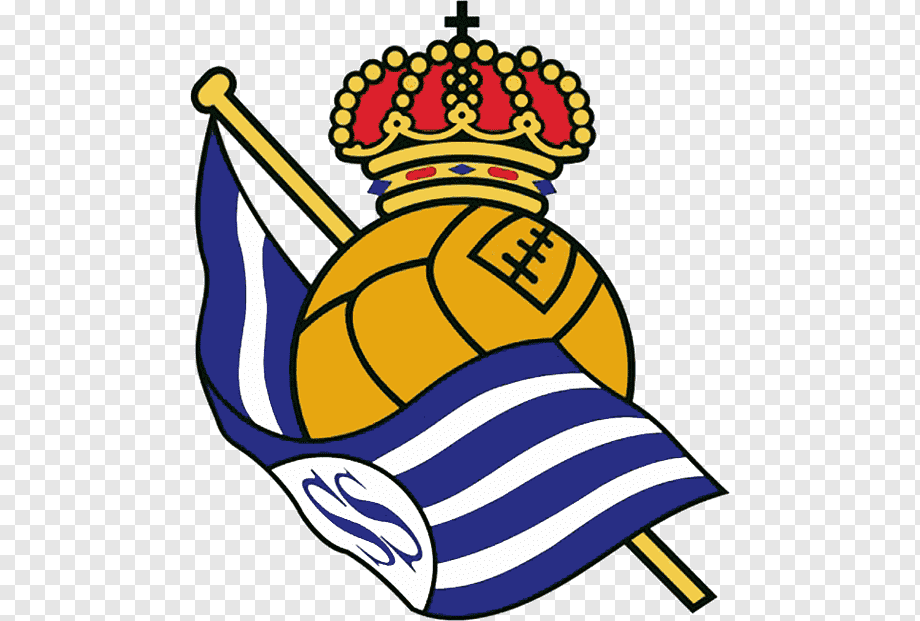Real Sociedad | 14/12 18:30 | Tenerife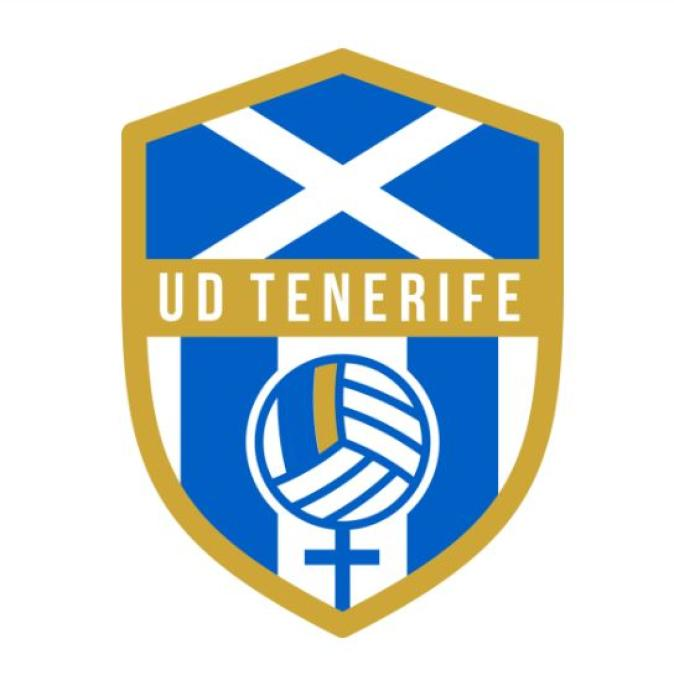 |
| 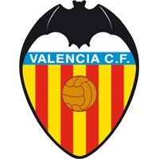Valencia | 15/12 12:00 | Barcelona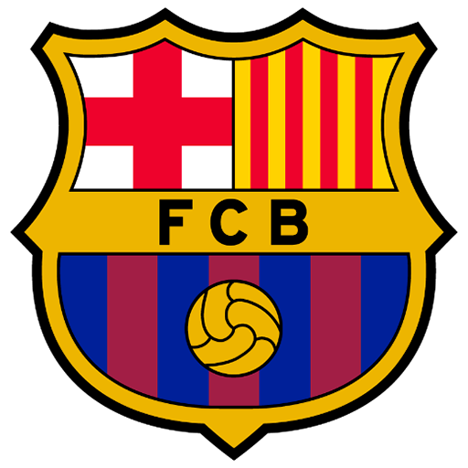 |
| 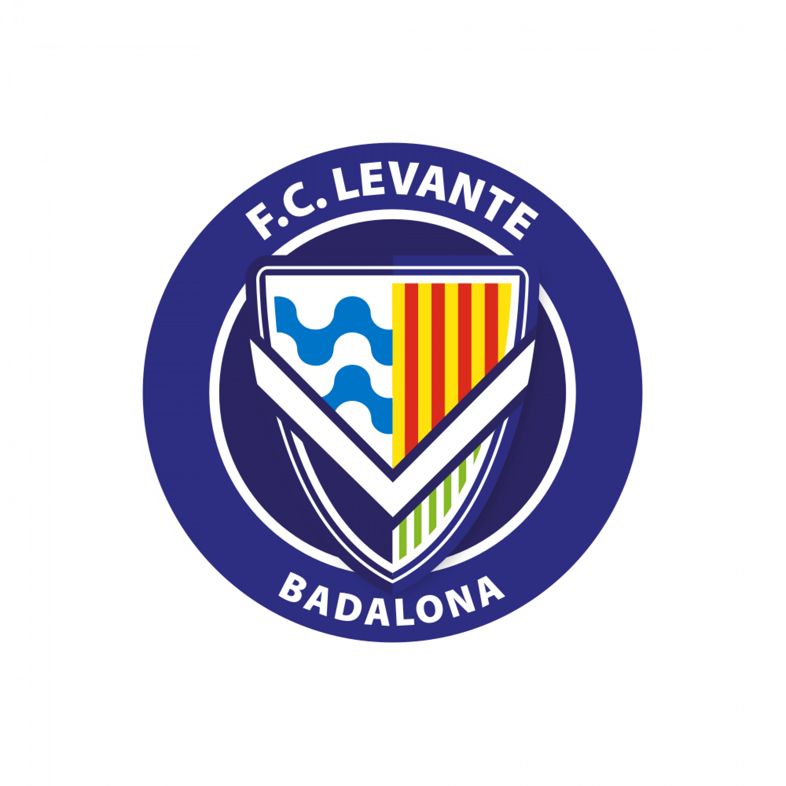Levante Badalona | 15/12 16:00 | Eíbar |
| 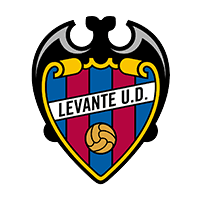Levante | 15/12 16:00 | Español |
| Sevilla | 15/12 19:00 | Athletic de Bilbao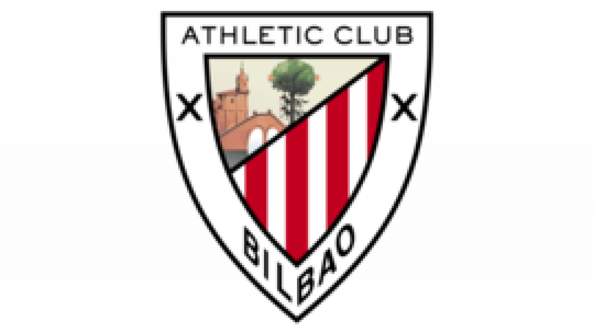 |
Clasificación
| Clasificacion Jornada 12 | Pts | PJ | PG | PE | PP | DG | |
|---|---|---|---|---|---|---|---|
| 1 | FC Barcelona | 33 | 11 | 11 | 0 | 0 | 46 |
| 2 | Atlético de Madrid | 24 | 11 | 7 | 3 | 1 | 12 |
| 3 | Real Madrid CF | 22 | 9 | 7 | 1 | 1 | 13 |
| 4 | Real Sociedad | 19 | 10 | 6 | 1 | 3 | 6 |
| 5 | Athletic Club | 17 | 11 | 5 | 2 | 4 | 1 |
| 6 | FC Levante Badalona | 16 | 11 | 4 | 4 | 3 | 1 |
| 7 | Costa Adeje Tenerife | 16 | 11 | 4 | 4 | 3 | -1 |
| 8 | Sevilla FC | 13 | 11 | 4 | 1 | 6 | -5 |
| 9 | Granada CF | 13 | 11 | 4 | 1 | 6 | -8 |
| 10 | RCD Español |
13 | 11 | 3 | 14 | 4 | -10 |
| 11 | Madrid CF | 13 | 11 | 4 | 1 | 6 | -11 |
| 12 | R.Betis Féminas | 11 | 11 | 3 | 2 | 6 | -10 |
| 13 | SD Eibar | 9 | 11 | 22 | 3 | 6 | -8 |
| 14 | Levante UD | 8 | 9 | 2 | 2 | 5 | -4 |
| 15 | Deportivo Abanca | 6 | 10 | 1 | 3 | 6 | -7 |
| 16 | VCF femenino | 2 | 9 | 0 | 2 | 7 | -15 |
Sobre Mi
Esta es mi historia
Nací por el verano del 98, en Málaga. Tuve una infancia muy ligada a mis abuelos, porque mis padres trabajan mucho. Tengo 2 hermanas mayores, con las que he pasado toda mi infancia jugando y aprendiendo. Tengo un sobrino llamado Adrián, también tengo una sobrina postiza, de una amiga de mi madre, que se llama Ángela.
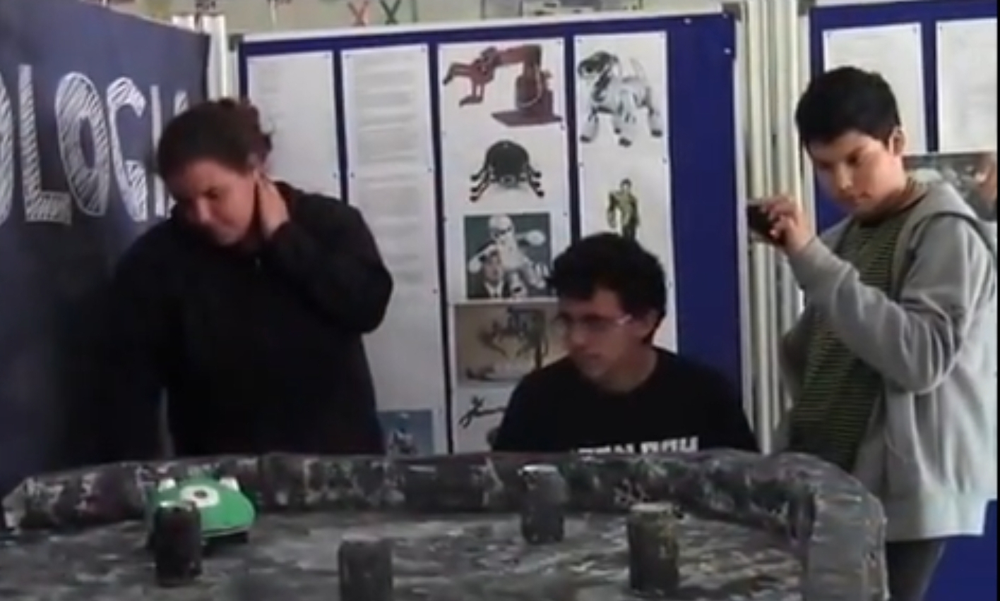Mi adolescencia siempre fue ligada a la ciencia, ya que me gustaba mucho y me lo pasaba muy bien en el instituto, hice un curso de robótica y otro de impresión 3D. Esta afición por la infórmatica me viene de esa época, pero una nunca le hace caso a los padres, mi madre ya me dijo que estudiara algo relacionado con eso, pero no le hice caso y estudié un Grado Superior de Proyecto y dirección de obras de decoración, las prácticas me hicieron darme cuenta que no era lo que yo quería en mi vida.
Llevo trabajando desde los 16 con mis padres en una churrería, tambíen he sido cocinera, camarera, operaria de fábrica y actualmente moza de almacén. Volví al mundo de la infórmatica porque una vez compartiendo coche en Blablacar, una pasajera me habló de los bootcamps, he hice uno de aprender a programar para reinventarme, gracias a ello descubrí el mundo de la programación y de las páginas web y aquí estoy hoy día, luchando por conseguir un futuro mejor.